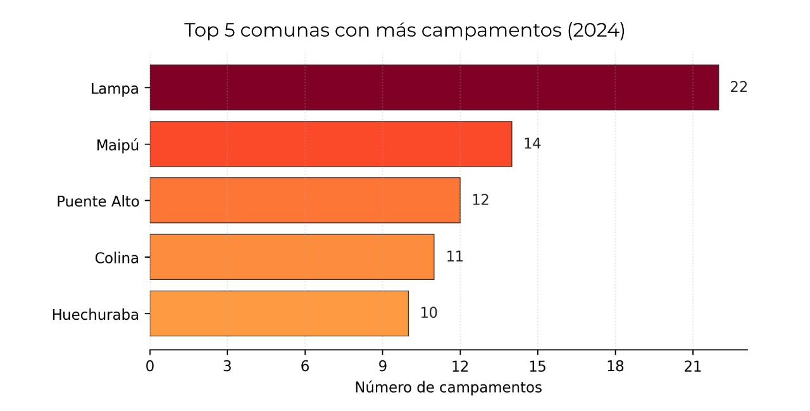
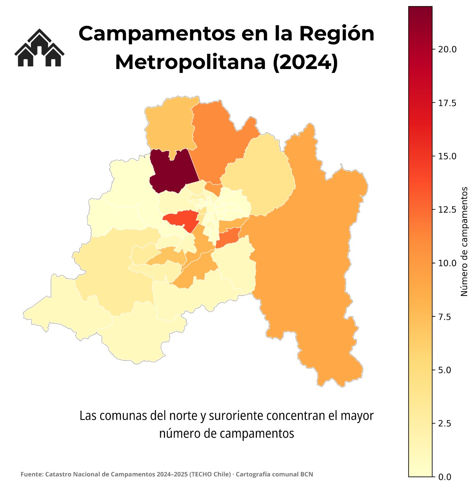

1. Contexto
En la Región Metropolitana de Santiago, los campamentos representan una de las principales expresiones del déficit habitacional. Según el Catastro Nacional de Campamentos 2024-2025 de TECHO-Chile, existen decenas de asentamientos distribuidos en distintas comunas, concentrandose en sectores con mayor presión por acceso a suelo urbano. Esta visualización busca mostrar la magnitud del fenómeno a nivel comunal, sin necesidad de detallar ubicaciones específicas de cada campamento.
2. Comunas más afectadas
Aunque el fenómeno es regional, ciertas comunas concentran la mayoría. Este gráfico muestra las cinco con más campamentos.
3. Desigualdad territorial
La periferia concentra la mayor parte de los asentamientos, reflejando la falta de acceso equitativo a la vivienda en la ciudad.
